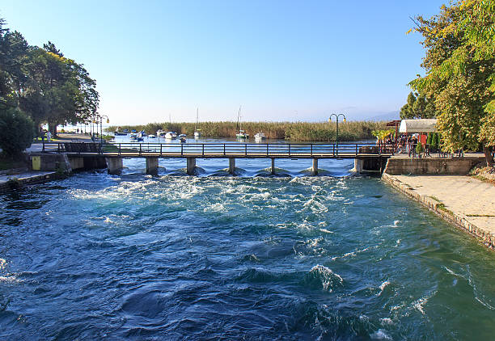
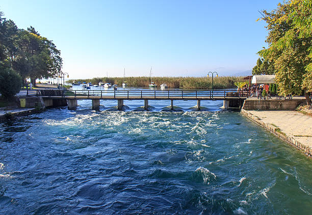

Јас сум Марија Цветаноска. Родена сум на 20 мај 2003 година во Струга, градот на поезијата. Живеам во село Враништа кое се наоѓа на оддалеченост на само 3км од градот Струга. Имам 20 години и како личност сум прилично трпелива. Секогаш ја зборувам вистината, кажувам позитивни и негативни критики. Мразам зборување зад грб. Секогаш се стремам да ги достигнам моите цели.
 
